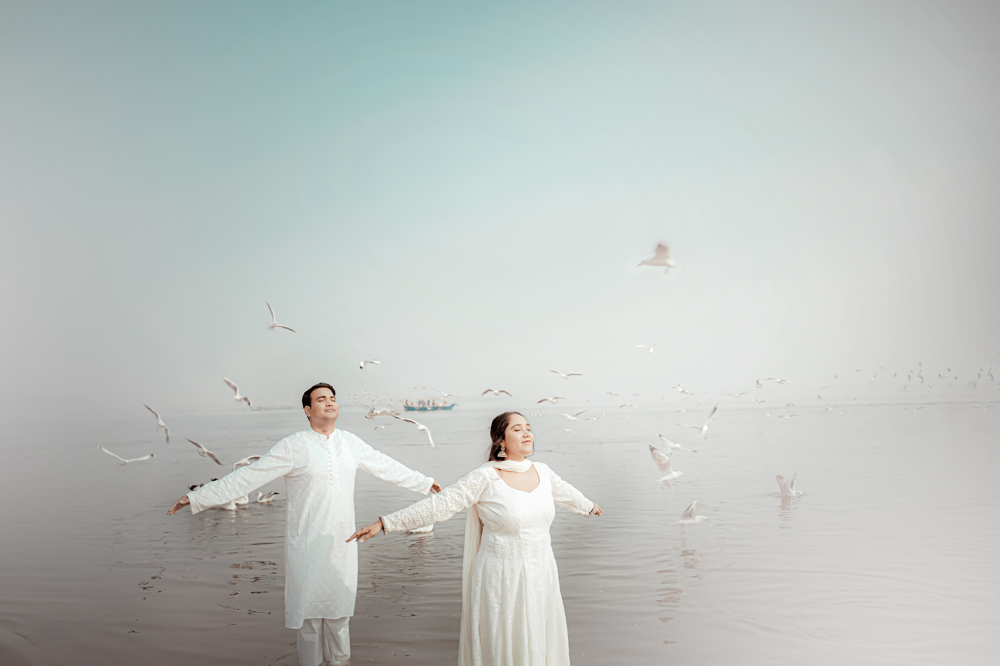
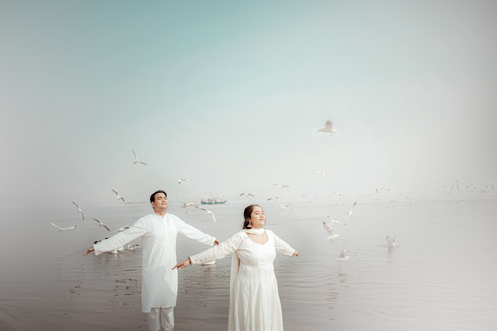

WE CAPTURE THE MOMENTS
At Capture , we specialize in freezing those fleeting moments in time that hold immense sinificance for you. With our passion for photography and keen eye for detail ,we transform ordinary monents into extraodinary memories.
Wheather it's a milestone event , a candid protrait, or th breathtaking beauty of nature, we strive t encapsulate the essence of every monents, ensuring that your charished memories last a lifetime. Trust us to capture the magic of your life's journey. one frame at a time.


 
